Фотогалерея
12 лучших фотографий
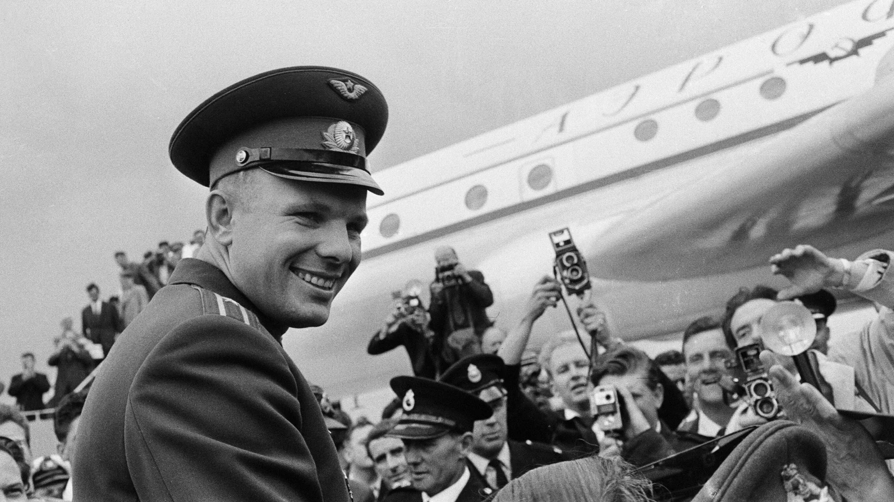
Юрий Гагарин во время посещения Великобритании в 1961 году
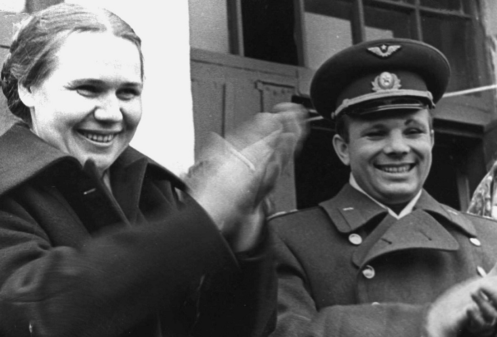
Валентина Гаганова и Юрий Гагарин в Вышнем Волочке
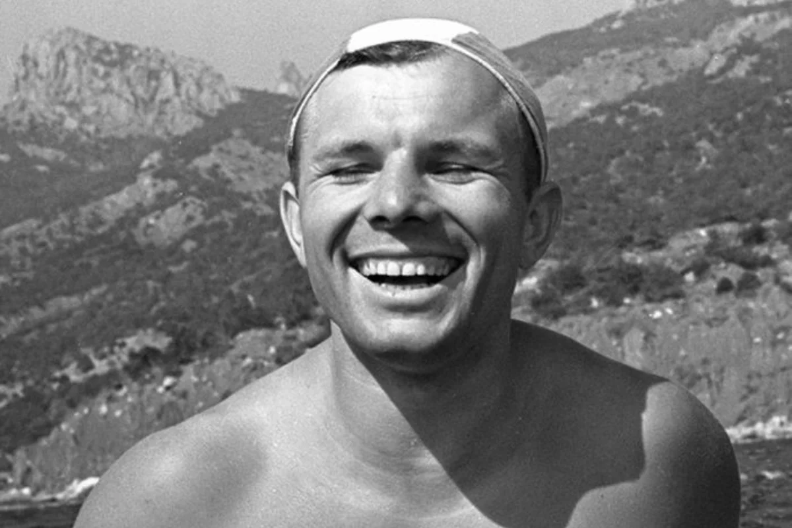
Послеполетный отдых. Звездный городок, лето 1961 года
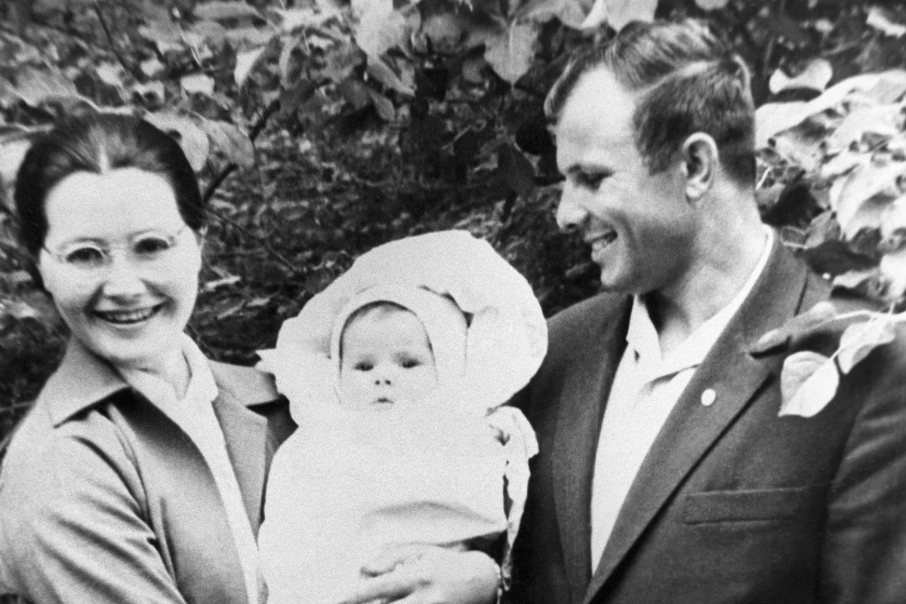
С женой и дочерью в Оренбурге летом 1959 года
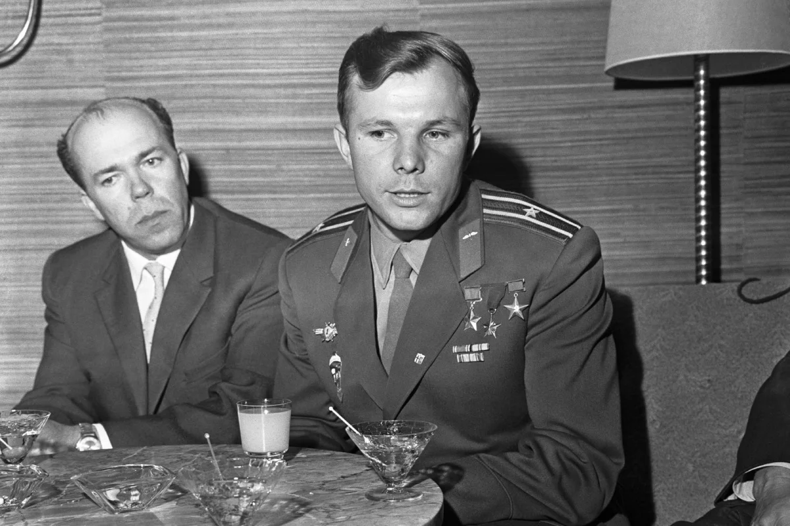
Визит в Хельсинки летом 1961 года
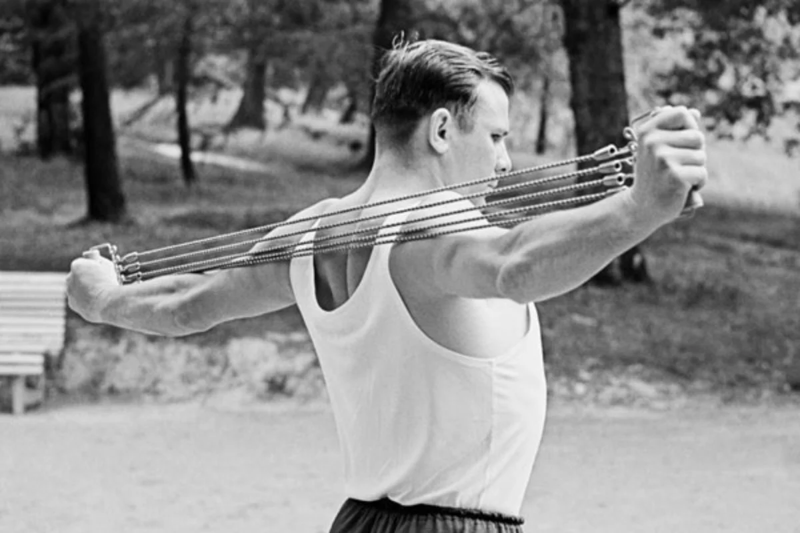
Гагарин в хорошей физической форме, лето 1963 года
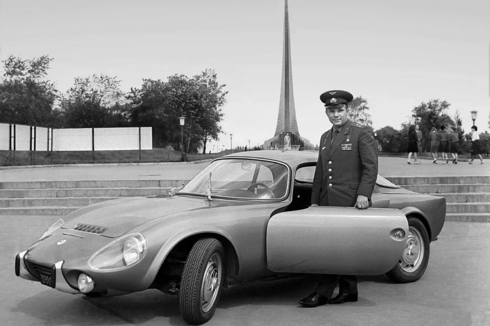
У монумента «Покорителям космоса» летом 1965 года
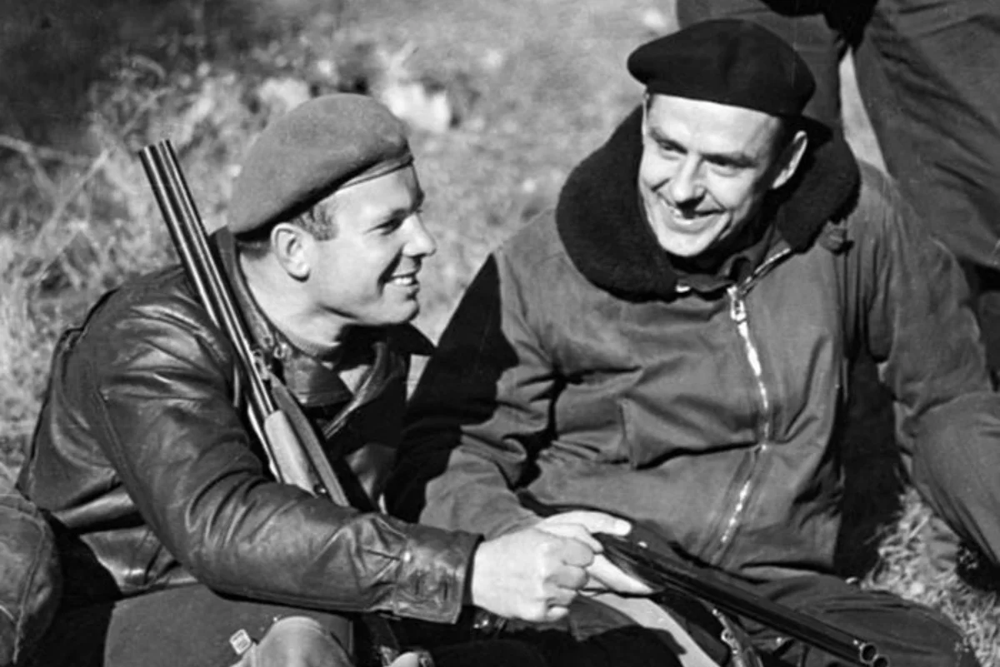
Фотография в стиле «Охотники на привале», осень 1966 года
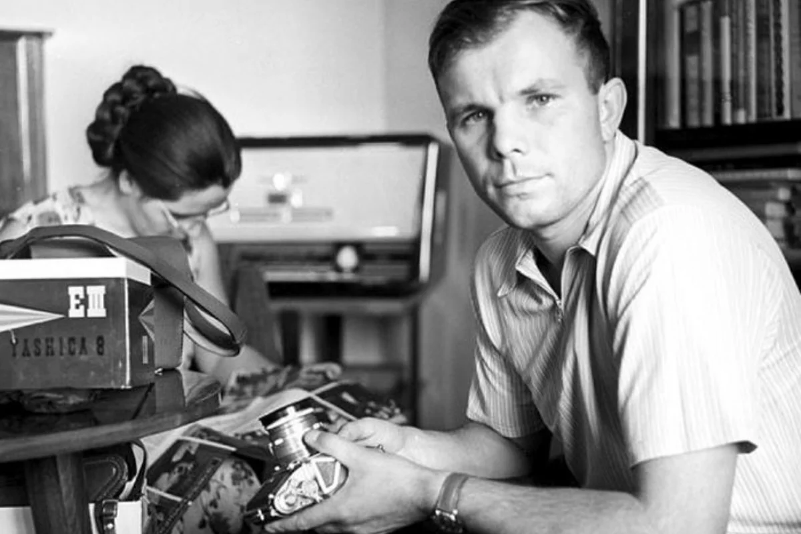
Фотограф-любитель. Осень 1965 года
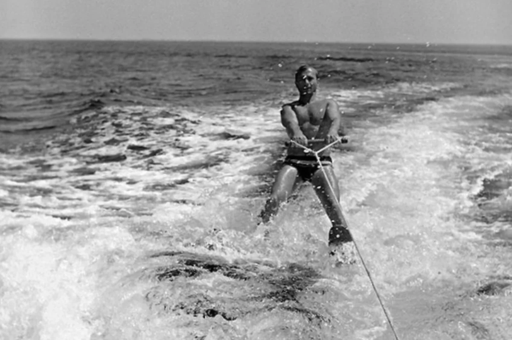
Послеполетный отдых. Крым, лето 1961 года
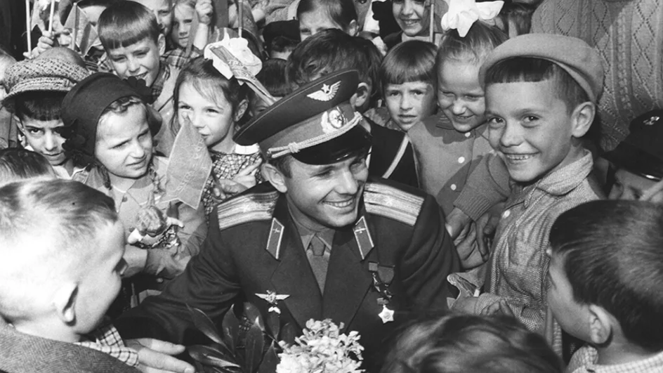
Гагарин в окружении юных москвичей. Май 1961 года
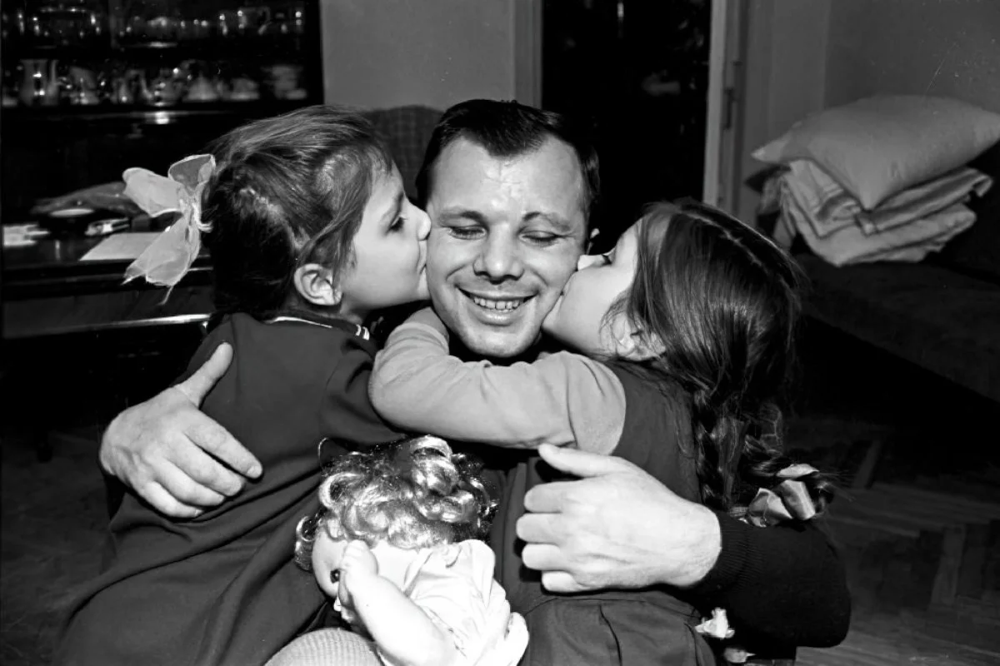
Юрий Гагарин с дочерьми Галей и Леной